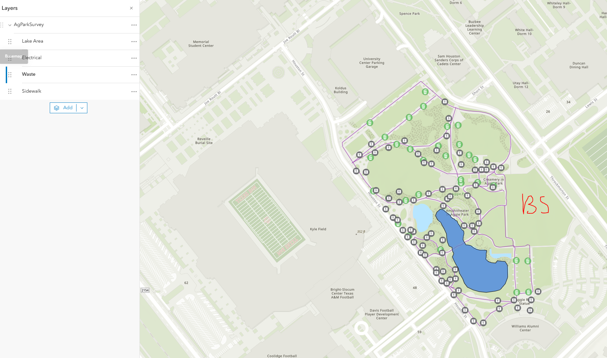

Aggie Park
In one of my courses, I had to map the lights and trash cans, the sidewalks, and a polygon for the water areas at Aggie Park. I did all the features in person. I walked the park and logged the location on Field Maps.
- Lights
- Trash cans
- Sidewalks
- Water areas

